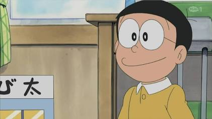
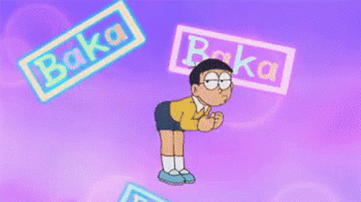

เหตุผลที่อยากเรียน Full stack web development
ความรู้ในส่วนของรายวิชานี้ เป็นส่วนที่สำคัญในสายงานของ Dev ทุกสาย อย่างน้อยควรรู้ไว้เป็นขั้น Basic
ติดตัว หรือ เพื่อนำความรู้ไปต่อยอดในสายอาชีพต่างๆ ได้
ความคาดหวังต่อวิชานี้
คาดหวังความรู้ขั้นพื้นฐานของการทำงานเกี่ยวกับ Front-end, Back-end
ปละการทำงานร่วมกันระหว่างสองตัวนี้ เพื่อสามารถนำความรุ้ไปต่อยอดในสายอาีพง่านในอนาคตได้
อะไรจุดอ่อน ที่ตนเองต้องพัฒนาเกี่ยวกับทักษะ Programming และ แนวทางการพัฒนา
จุดอ่อนส่วนใหญ๋ คือ ภาษาอังกฤษที่ยังไม่สามารถอ่าน Document ได้เข้าใจขนาดนั้น
รองลงมา คือ ความไม่รู้ ในสายงานอาชีพนี้มีความรู้อีกมากมายจนเรียนรู้ได้ทั้งชีวิต การไม่หยุดที่จะเรียนรู้
กระตือรือร้นที่จะเรียนรู้สิ่งใหม่อยู่ตลอด คือ แนวทางการพัฒนาที่ดีที่สุด
